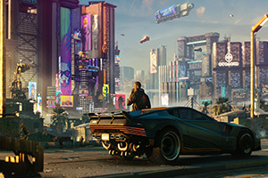

When Cyberpunk 2077 launched in 2020, it was met with mixed reactions—praised for its ambitious world-building but heavily criticised for its technical shortcomings. Fast forward to 2023, and the release of the Phantom Liberty expansion alongside the game-changing 2.0 update marked a turning point. But now, in 2025, does Cyberpunk 2077, bolstered by Phantom Liberty, truly deliver the experience fans had hoped for?

The answer is an emphatic yes. Phantom Liberty not only revitalised the base game but also introduced new mechanics, a gripping spy-thriller narrative, and a complete overhaul of Cyberpunk 2077’s core systems. Whether you’re a returning player or someone diving into Night City for the first time, this expansion has cemented Cyberpunk’s status as one of the most compelling RPGs of its generation.
One of the biggest improvements brought by Phantom Liberty was its narrative depth. Unlike the base game’s fragmented storytelling, Phantom Liberty focused on a tightly woven espionage tale starring Idris Elba as Solomon Reed. The addition of a new district, Dogtown, brought a sense of urgency and danger that was sometimes lacking in the original game. This expansion’s choice-driven outcomes gave players meaningful consequences, making it one of the most replayable stories in the game.
The 2.0 update was arguably just as important as the expansion itself. By reworking the game’s progression systems, combat mechanics, and police AI, CD Projekt Red transformed Cyberpunk 2077 into the RPG it was always meant to be. The revamped perk system allowed for more diverse builds, with cyberware playing a much greater role in gameplay. The new vehicle combat system also added an extra layer of action, making high-speed chases feel dynamic and engaging.
Performance was another area that saw significant improvement. While the original release suffered from game-breaking bugs, the Phantom Liberty update ensured that Cyberpunk 2077 ran smoothly across all platforms. Ray tracing enhancements, improved AI behaviour, and better NPC interactions helped Night City feel more alive than ever before.
Visually, Phantom Liberty brought a level of detail that surpassed even the base game’s high standards. The neon-drenched streets of Dogtown felt grittier and more densely packed, creating a unique atmosphere separate from the rest of Night City.
Character animations were also noticeably improved, lending more weight to both combat and dialogue interactions.
One of the most welcome changes was the overhaul of Cyberpunk’s police system. The once-notorious “teleporting cops” were replaced with a proper wanted system, where the NCPD reacted logically to crimes, leading to escalating pursuits and thrilling getaways. This addition made the game world feel more reactive and dynamic, something sorely missing from its initial version.
But does Phantom Liberty make Cyberpunk 2077 the perfect RPG? While it dramatically improved the experience, some areas still fell short. Despite the enhanced AI, some NPC behaviours remained stiff, and Night City still lacked the level of interactivity that many expected. Additionally, while the expansion’s story was gripping, some players wished for even more side content outside of Dogtown.
However, in the grand scheme of things, Phantom Liberty successfully redeemed Cyberpunk 2077. What was once a game plagued by controversy has now become a must-play title, offering one of the most immersive sci-fi RPG experiences available. The developers' commitment to refining and expanding upon the game years after launch speaks volumes about their dedication to quality.
So, does Phantom Liberty bring a fresh feel to Cyberpunk 2077? Absolutely. Whether you’re revisiting the game after its rocky launch or playing it for the first time in 2025, Cyberpunk 2077, with its expansion, finally lives up to the vision that was promised. It may have taken years to get there, but Night City is now a place truly worth exploring.